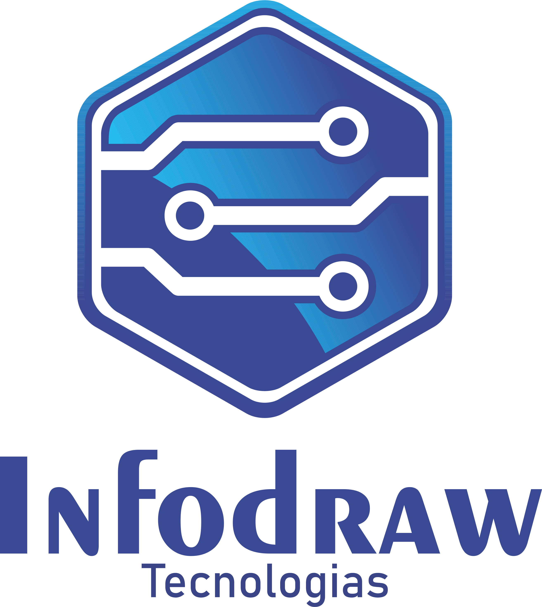

Assistência técnica • Computadores & Notebooks
Estamos chegando. Em breve online.
A Infodraw Tecnologias está preparando uma nova presença digital, suporte e assistência técnica especializada em computadores e notebooks. Chame no WhatsApp e seja avisado quando o site estiver disponível.
 Fale conosco no WhatsApp
Fale conosco no WhatsApp